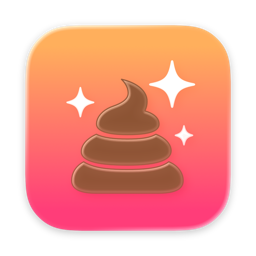

Clean My Crap
Your Mac is full of crap. Let's find it, sort it, and flush it.
Download for MacFree · macOS 26 or later · Apple silicon and Intel · Signed and notarized by Apple
Updates itself. All releases
What it does
Sorted by riskDefinitely Crap, Probably Crap, Might Be Treasure. Only the safe stuff is picked for you.
Nothing deleted until you say soRisky things go to the Trash, so you can fish them back out.
Evict an appDrop an app on the window. It leaves with everything it scattered around your Mac.
Ghosts of apps pastSettings and caches from apps you deleted ages ago.
Apps you forgot you hadEverything you haven't opened in six months, with its size.
For developers tooXcode, simulators, Docker, node_modules, Gradle, AI models and more.
From the command line
Install it from Clean My Crap → Install Command Line Tool…, then:
crap scan # what's taking up space crap flush --safe # dry run; add --yes to do it crap apps --forgotten crap evict Blender --yes crap scan --json # for scripts and AI agents